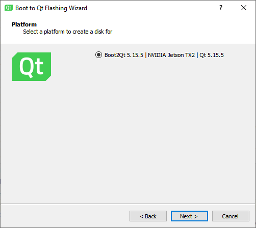

Connecting Boot2Qt Devices
You can connect Boot2Qt devices to the development PC to run, debug, and analyze applications built for them from Qt Creator. For this, you need the appropriate Qt license.
If you have a tool chain for building applications for Boot2Qt devices installed on the development PC, you can add it to Qt Creator. You can then select a kit with the Boot2Qt device type to build applications for and run them on the devices.
To be able to run and debug applications on Boot2Qt devices, you must add devices and select them in the Qt Creator kit.
Enabling the Boot2Qt Plugin
To enable the Boot2Qt plugin:
- Select Help > About Plugins > Device Support > Boot2Qt to enable the plugin.
- Select Restart Now to restart Qt Creator and load the plugin.
Adding Boot2Qt Devices
If Qt Creator does not automatically detect a device you connected with USB, select Preferences > Devices > Devices > Add > Boot2Qt Device to create either a network connection or a USB connection to it.
To add a device without using a wizard, select Boot2Qt Device in the pull-down menu of the Add button.
Note: On Ubuntu Linux, the development user account must have access to the plugged-in devices. To grant them access to the device via USB, create a new udev rule, as described in Boot2Qt: Setting Up USB Access to Embedded Devices.
You can edit the settings later in Preferences > Devices > Devices.
To reboot the selected device, select Reboot Device.
To restore the default application to the device, select Restore Default App.
Protecting Connections
You can protect the connections between Qt Creator and a device by using an OpenSSH connection. OpenSSH is a connectivity tool for remote login using the SSH protocol. The OpenSSH suite is not delivered with Qt Creator, so you must download it and install it on the development PC. Then, you must configure the paths to the tools in Qt Creator. For more information, see Configuring SSH Connections.
You need either a password or an SSH public and private key pair for authentication. If you do not have an SSH key, you can use the ssh-keygen tool to create it in Qt Creator. For more information, see Generating SSH Keys.
Qt Creator does not store passwords. If you use password authentication, you may need to enter the password upon every connection to the device, or if caching is enabled, at every Qt Creator restart. If you frequently run into the timeout, consider using key-based authentication. On macOS and Linux, you can also select Preferences > Devices > SSH and increase the time (in minutes) to use the same SSH connection in the Connection sharing timeout field. Windows does not support shared connections.

Flashing Boot2Qt Devices
To flash the Boot2Qt image to an SD card with Flashing Wizard, select Tools > Flash Boot to Qt Device and follow the instructions of the wizard.

Configuring Connections
To configure connections between Qt Creator and a Boot2Qt device and to specify build and run settings for the device:
- Check that you can reach the IP address of the device, or use USB to connect it.
- Select Preferences > Kits > Qt Versions > Add to add the Qt version for Boot2Qt.
- Select Preferences > Kits > Compilers > Add to add the compiler for building the applications.
- Select Tools > Flash Boot to Qt Device to flash the Boot2Qt image to an SD card with Flashing Wizard.
- To deploy applications and run them remotely on devices, specify parameters for connecting to the devices over the network (Qt Creator automatically detects devices connected with USB):
- Select Preferences > Devices > Devices > Add > Boot2Qt.
- In the Device name field, enter a name for the connection.
- In the Device address field, enter the host name or IP address of the device. This value will be available in the
%{Device:HostAddress}variable. - Click Finish to test the connection and add the device.
You can edit the connection parameters in the Devices tab. The wizard does not show parameters that have sensible default values. One of these is the SSH port number, which is available in the variable
%{Device:SshPort}.To add a device without using the wizard, select Boot2Qt Device in the pull-down menu of the Add button.
- Select Preferences > Kits > Add to add a kit for building applications for the device. Select the Qt version, compiler, and device that you added above, and choose Boot2Qt as the device type.
- To specify build settings:
- Open a project for an application you want to develop for the device.
- Select Projects > Build & Run to enable the kit that you specified above.
- Select Run to specify run settings. Usually, you can use the default settings.
When you run the project, Qt Creator deploys the application as specified by the deploy steps. By default, Qt Creator copies the application files to the device. For more information, see Boot2Qt Run Settings.